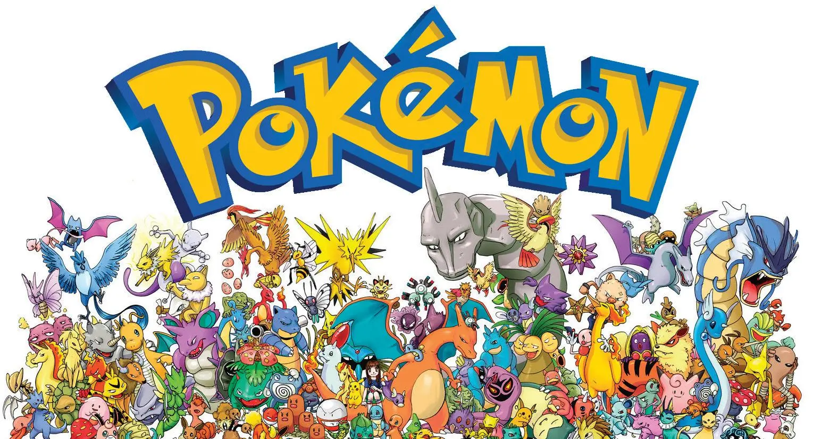
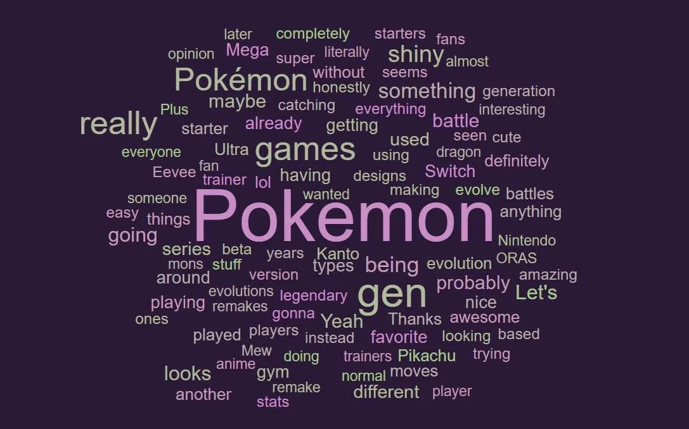
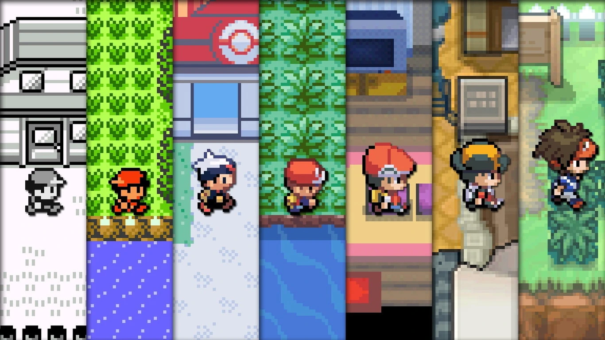

Inicio
Pokémon (ポケモン Pokemon?) es una franquicia de medios que originalmente comenzó como un videojuego RPG, pero debido a su popularidad ha logrado expandirse a otros medios de entretenimiento como series de televisión, películas, juegos de cartas, ropa, entre otros, convirtiéndose en una marca que es reconocida en el mercado mundial. Las ventas de videojuegos hasta el 1 de diciembre de 2006 habían alcanzado una cantidad de 340 millones de ejemplares (incluyendo la venta de la versión Pikachu de la consola Nintendo 64), logrando ocupar el segundo lugar de las sagas de videojuegos más vendidos de Nintendo. La franquicia celebró su décimo aniversario el 27 de febrero de 2006.
La saga de videojuegos es desarrollada por la compañía programadora de software japonesa Game Freak, con personajes creados por Satoshi Tajiri para la empresa de juguetes Creatures Inc., y a su vez distribuida por Nintendo. La misión en estos juegos es capturar y entrenar a los pokémon (criaturas cuya denominación da nombre al juego), que hasta la fecha alcanzan el número de 1025 (1172 incluyendo formas regionales y mecánicas exclusivas procedentes de otras entregas). La posibilidad de intercambiarlos le hizo conseguir una popularidad que se plasmó en un éxito de ventas y la consiguiente aparición de una serie animada, películas y diverso merchandising como peluches, juguetes y cartas.
La producción de los videojuegos, serie de anime y demás material para su distribución en occidente fue realizada en Estados Unidos por 4Kids Entertainment hasta noviembre de 2005, momento en que decidió no renovar su contrato con Pokémon USA (una subsidiaria de Pokémon Company). Actualmente esta supervisa todo lo referente al material de Pokémon en su distribución en occidente.
Actualmente la franquicia de pokémon ha alcanzado la cifra de 500 millones ejemplares lo largo de los años.

Etimologia
La palabra Pokémon es la contracción romanizada de la marca japonesa Pocket Monsters (ポケットモンスター Poketto Monsutā?, literalmente "monstruos de bolsillo"), como tales contracciones son muy comunes en Japón.
>En inglés, la palabra se escribe Pokémon con tilde en acento agudo, a pesar de que este signo no existe en el uso habitual de este idioma. Esto se debe a que al unir las palabras Pocket Monster se obtuvo Poke-Mon. El problema es que, según las normas del inglés, esto se pronunciaría como pouk mon. En muy pocos otros casos (como maté que se pronuncia /mátei/ y quiere decir mate) se puede poner en inglés un acento en la "e" para que esta se pronuncie, resultando así el nombre "Pokémon".
Sobre la pronunciación de los hispanohablantes en el caso de Hispanoamérica, por el doblaje del anime, que suele ser más cercano al estadounidense, se pronuncia /pokemón/. En España se pronuncia /pokemon/ de con acento llano.
El término Pokémon, además de referirse a la franquicia en sí, puede aludir colectivamente a las 1010 especies ficticias que han aparecido en los diversos medios de la franquicia. Como marca registrada es invariable: los Pokémon. Como voz lexicalizada, ya escrita en minúscula y sin tilde, si nos atenemos a su pronunciación original, pluralizaría según la RAE en -es: los pokémones. Sin embargo en los juegos pokémon es plural y singular.

Historia
Los orígenes de Pokémon se remontan a la adolescencia de Satoshi Tajiri en su natal Machida, Tokio, cuando exploraba prados y estanques aledaños en búsqueda de insectos y otras pequeñas criaturas, como renacuajos y cangrejos, para coleccionarlas, estudiarlas y clasificarlas en un cuaderno que le habían obsequiado sus padres. El entorno rural de Machida, al igual que el de varias otras ciudades japonesas, se vio impactado de forma significativa por la urbanización derivada del «milagro económico». Mientras cursaba su segundo año de educación secundaria, Tajiri comenzó a interesarse en los videojuegos arcade después de inaugurarse un salón recreativo cerca de su hogar. Su afición continuó durante su formación universitaria en el Tokyo College of Technology, en los años 1980, y algunos de sus lugares predilectos eran los salones recreativos del barrio Shimokitazawa, así como de Shinjuku y Shibuya. En marzo de 1983, a sus diecisiete años de edad, publicó la primera edición de una revista dōjinshi a la cual tituló Game Freak, en alusión a la película estadounidense Freaks (1932) con la cual estaba fascinado en ese entonces. Su contenido, escrito a mano por el propio Tajiri, versaba principalmente sobre reseñas y guías de videojuegos y tenía un costo de 200 JPY. En ese período, conoció a Tsunekazu Ishihara y al artista de manga Ken Sugimori; este último lo habría de ayudar con la ilustración de las siguientes ediciones de Game Freak, hasta el cese de su publicación a finales de la misma década. Para entonces, Tajiri ya era un reconocido periodista de videojuegos en Japón.
Con el éxito de la consola NES, los dos decidieron crear algo innovador para la consola, y Tajiri decidió hacer que Game Freak se convirtiera en una compañía. Comenzó a trabajar en un juego de rompecabezas llamado Mendel Palace (conocido en Japón como Quinty), el cual fue lanzado en 1989, obteniendo buen éxito, lo cual marcó el principio de la historia de la compañía.
Al año siguiente, los dos habían decidido crear un juego para la consola Game Boy. Tajiri al ver el Game Link Cable, tuvo la idea de un juego en donde se pudiera transferir información de una Game Boy a otra. Influenciado por sagas como Final Fantasy y Dragon Quest, Tajiri asoció la idea de la metamorfosis. Tajiri creó un RPG en donde los monstruos podrían evolucionar y ser transportados de una consola portátil a otra.
El proyecto fue enviado a Nintendo. Mientras que Tajiri era quien tenía la idea principal, Sugimori era el encargado de los diseños de los monstruos. Así mismo, recibieron consejos por parte de Shigeru Miyamoto (creador de Mario Bros.) para mejorar el juego, que en ese entonces recibía el nombre de Capsule Monster.
La producción de este proyecto duró cinco años. En aquel tiempo, la consola Game Boy entró en declive por la escasez de nuevos juegos, debido a que la compañía Nintendo ya no tenía más ideas para la consola portátil. Por otro lado, Game Freak estuvo con carencia de acciones y recursos, por lo que su situación entró en jaque. Luego de esto, el proyecto de Tajiri fue renombrado como Pocket Monsters. En febrero de 1996 se lanzaron al mercado Pocket Monsters Aka and Midori ("Red" y "Green"). Inicialmente el juego no tuvo éxito, pero al alcanzar un año, se había llegado a la marca de millón de copias.
Al ver esto, Nintendo decidió enviar la serie a occidente. El nombre fue abreviado a Pokémon debido a que había una serie de Mattel conocida como Monster in My Pocket. Los juegos Pokémon Red y Blue se convirtieron en un éxito en los Estados Unidos, con más de 200.000 copias vendidas en la primera semana.
El eslogan de la serie en Japón fue ¡Vamos a conseguir Pokémon! (ポケモンGETだぜ! Pokemon Getto Daze!?), el cual se hizo famoso. En los Estados Unidos, esta frase es conocida como “Gotta Catch'em All!”, en Hispanoamérica como “¡Atrápalos ya!” y en España: "¡Hazte con todos!".

Pokemones Iniciales
| Generación |
Año |
Región |
Pokemones |
| 1° Generación |
1996 |
Kanto |
Bulbasaur, Charmander, Squirtle |
| 2° Generación |
1999 |
Johto |
Chikorita, Cyndaquil, Totodile |
| 3° Generación |
2002 |
Hoenn |
Treecko, Torchic, Mudkip |
| 4° Generación |
2006 |
Sinnoh |
Turtwig, Chimchar, Piplup |
| 5° Generación |
2010 |
Unova |
Snivy, Tepig, Oshawott |
| 6° Generación |
2013 |
Kalos |
Chespin, Fennekin, Froakie |
| 7° Generación |
2016 |
Alola |
Rowlet, Litten, Popplio |
| 8° Generación |
2019 |
Galar |
Grookey, Scorbunny, Sobble |
| 9° Generación |
2022 |
Paldea |
Sprigatito, Fuecoco, Quaxly |